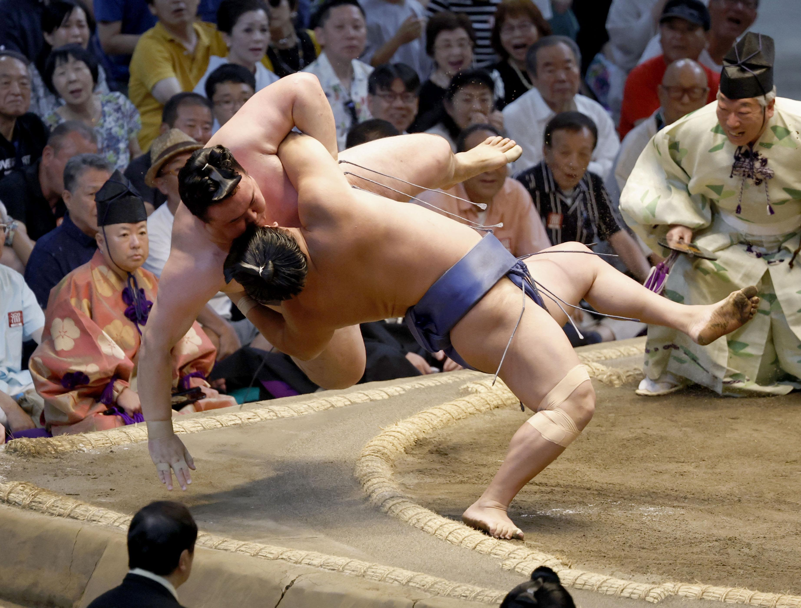
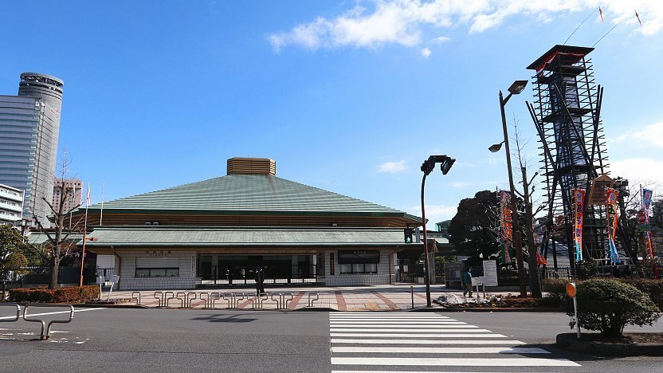
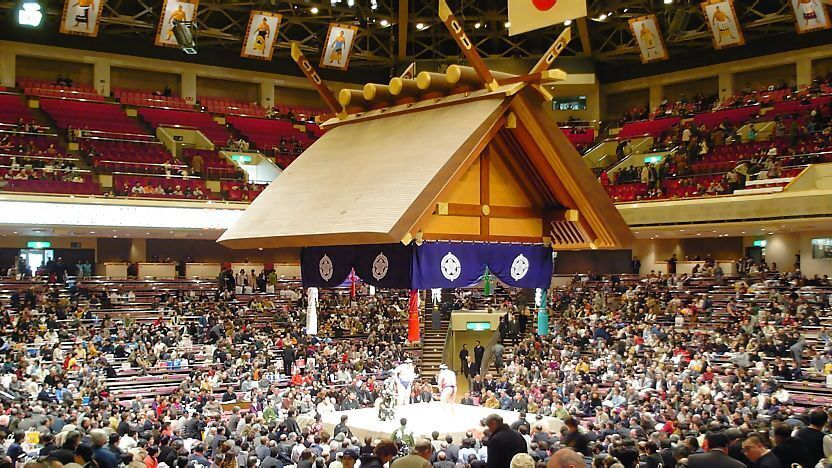

stayme THE HOTEL 上野駅前
7 Chome-10-13 Ueno, Taito City, Tokyo 110-0005, Japan
+81 3-6778-7790

🏟️ Stadium
Kokugikan National Sumo Stadium
1-3-28 Yokoami, Sumida City, Tokyo 130-0015, Japan



🪑 Box Seats
The rest of the stadium's first floor consists of Japanese-style box seats, which generally seat four people (there are a few with higher and lower capacities). Shoes are removed, and spectators sit on cushions. Tickets are sold for entire boxes regardless of whether they are fully occupied or not, i.e. two people using a 4-seat box need to purchase all four tickets. Box seats are further classified into
A,
B and
C according to distance to the ring.
📅 A Tournament Day
Lower division matches start from 8:30 (from 10:00 on days 13–15), second division (Juryo) matches from 15:00 and top division (Makuuchi) matches from 16:00. Ring entering ceremonies between divisions are also interesting to watch. The highest ranked wrestlers have their matches just before 18:00. On the last day of each tournament, the schedule is shifted forward by 30 minutes to accommodate the victory ceremony at the end.
The stadium atmosphere improves with the arrival of more spectators as it gets later in the day when the most spectacular matches happen. Intervals between bouts also lengthen as they include longer preparation times and more pre-match action between the high-ranked wrestlers. We recommend spectators with limited time to be present at the stadium at least for the top division action between 15:30 and 18:00.